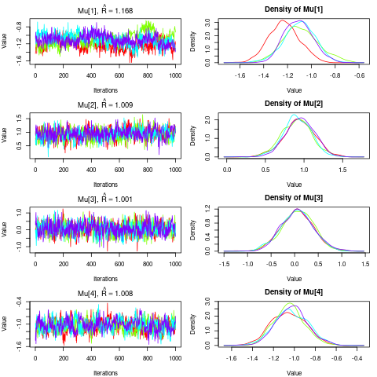
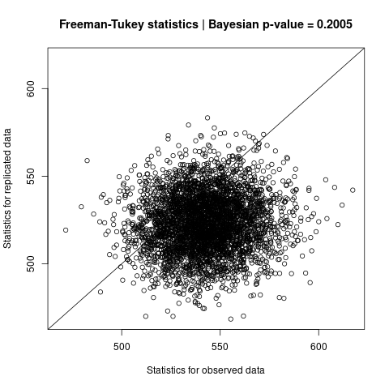

This section briefly describes the steps involved in a series of
model-based analyses of eDNA metabarcoding data that can be performed
using the occumb R package.
Prepare dataset
We will use the package’s built-in data fish (see
?fish for documentation) to see how to analyze sequence
count data with the occumb package. The
summary() function can be used to display an overview of
the dataset.
#> Sequence read counts:
#> Number of species, I = 50
#> Number of sites, J = 50
#> Maximum number of replicates per site, K = 3
#> Number of missing observations = 6
#> Number of replicates per site: 2.88 (average), 0.33 (sd)
#> Sequencing depth: 77910 (average), 98034.7 (sd)
#>
#> Species covariates:
#> mismatch (continuous)
#> Site covariates:
#> riverbank (categorical)
#> Replicate covariates:
#> (None)
#>
#> Labels for species:
#> Abbottina rivularis, Acanthogobius lactipes, Acheilognathus macropterus, Acheilognathus rhombeus, Anguilla japonica, Biwia zezera, Carassius cuvieri, Carassius spp., Channa argus, Ctenopharyngodon idella, Cyprinus carpio, Gambusia affinis, Gnathopogon spp., Gymnogobius castaneus, Gymnogobius petschiliensis, Gymnogobius urotaenia, Hemibarbus spp., Hypomesus nipponensis, Hypophthalmichthys spp., Hyporhamphus intermedius, Ictalurus punctatus, Ischikauia steenackeri, Lepomis macrochirus macrochirus, Leucopsarion petersii, Megalobrama amblycephala, Micropterus dolomieu dolomieu, Micropterus salmoides, Misgurnus spp., Monopterus albus, Mugil cephalus cephalus, Mylopharyngodon piceus, Nipponocypris sieboldii, Nipponocypris temminckii, Opsariichthys platypus, Opsariichthys uncirostris uncirostris, Oryzias latipes, Plecoglossus altivelis altivelis, Pseudogobio spp., Pseudorasbora parva, Rhinogobius spp., Rhodeus ocellatus ocellatus, Salangichthys microdon, Sarcocheilichthys variegatus microoculus, Silurus asotus, Squalidus chankaensis biwae, Tachysurus tokiensis, Tanakia lanceolata, Tribolodon brandtii maruta, Tribolodon hakonensis, Tridentiger spp.
#> Labels for sites:
#> 1, 2, 3, 4, 5, 6, 7, 8, 9, 10, 11, 12, 13, 14, 15, 16, 17, 18, 19, 20, 21, 22, 23, 24, 25, 26, 27, 28, 29, 30, 31, 32, 33, 34, 35, 36, 37, 38, 39, 40, 41, 42, 43, 44, 45, 46, 47, 48, 49, 50
#> Labels for replicates:
#> L, C, R Note that a summary of the sequence read count data is found in the
first block of the output. It shows that the data was obtained from
samples of 50 sites \(\times\) (up to)
3 replicates, with 50 fish species recorded. A summary of the missing
samples, number of replicates per site, and sequencing depth (i.e., the
total number of sequence reads per sample) are also presented. The
second block of the output indicates that fish data also
has two covariates, one continuous species covariate,
mismatch, and one discrete site covariate,
riverbank, which can be used in the following analysis. The
third block of the output shows labels given to the 50 species, 50
sites, and three replicates.
As such, the fish data brings together a set of data
relevant to the analysis with the occumb package. When you
are analyzing your own dataset, you can use occumbData() to
set up your data object.
If you want to display the entire data, just type
fish.
fish # Result not shownFit models
With the fish dataset (or your dataset constructed with
occumbData()), you can fit a multispecies site occupancy
model for eDNA metabarcoding using the occumb() function
which fits the model in a fully Bayesian approach via the Markov Chain
Monte Carlo (MCMC) method implemented in JAGS.
occumb() has several arguments that accept model
formulas to fit different model variants using the usual R formula
syntax. See vignette("model_specification") for an overview
of the models that occumb() can fit and details on how to
specify models.
Fitting a null model (i.e., an intercept-only model, though the value of the intercept is species-specific) is very simple, as follows.
fit0 <- occumb(data = fish, parallel = TRUE)Setting parallel = TRUE is recommended for faster model
fitting through parallel computation. A model incorporating species and
site covariates in the fish dataset can be fitted, for
example, as follows.
fit1 <- occumb(formula_psi = ~ riverbank,
formula_phi_shared = ~ mismatch,
data = fish,
parallel = TRUE)Here, riverbank is specified as the covariate for site
occupancy probability (psi) in the formula_psi
argument and mismatch as the covariate for relative
dominance of sequence (phi) in the
formula_phi_shared argument. In the latter, since
mismatch is a species covariate, the
formula_phi_shared argument is used instead of
formula_phi so that the effect of mismatch is
constant across species; see
vignette("model_specification") for more details.
The above two model fits can take approximately one hour. Given that
occumb() fits a class of complex hierarchical models with
many parameters and unknown variables, it may require, depending on the
dataset size, a long time and/or a lot of memory for model fitting.
occumb() also has several arguments to control MCMC
computation for fitting the model. For example, to obtain more precise
posterior estimates than the example above, you can explicitly set the
n.iter and n.thin arguments to get longer and
less autocorrelated MCMC samples.
fit1x <- occumb(formula_psi = ~ riverbank,
formula_phi_shared = ~ mismatch,
data = fish,
n.thin = 20,
n.iter = 40000,
parallel = TRUE)Check posterior samples
With the fit1 object, we will look at how to access and
diagnose the posterior sample obtained using occumb().
Just enter the object name fit1 displays a summary of
the MCMC results, including a table of posterior estimates for each
saved parameter.
fit1 # Result not shownThe plot() function draws a trace plot and a density
plot for each parameter.
plot(fit1)
Users who have used the jagsUI package should be
familiar with the output of these operations. Model fitting in
occumb() relies on functions provided by the
jagsUI package, and the above operations respectively
apply the print and plot methods for jagsUI objects.
The summary() function provides a high-level summary of
the result. This is based on the summary method for
jagsUI objects and modified for the occumb()
output, which displays data summary, model equations, MCMC settings, and
a quick overview of the convergence of relevant model parameters.
summary(fit1)
#> Summary for an occumbFit object
#>
#> Summary of data:
#> Number of species, I = 50
#> Number of sites, J = 50
#> Maximum number of replicates per site, K = 3
#> Number of missing observations = 6
#> Number of replicates per site: 2.88 (average), 0.33 (sd)
#> Sequencing depth: 77910 (average), 98034.7 (sd)
#>
#> Model specification:
#> formula_phi: ~ 1
#> formula_theta: ~ 1
#> formula_psi: ~ riverbank
#> formula_phi_shared: ~ mismatch
#> formula_theta_shared: ~ 1
#> formula_psi_shared: ~ 1
#> prior_prec: 1e-04
#> prior_ulim: 10000
#>
#> Saved parameters:
#> Mu sigma rho alpha beta gamma alpha_shared phi theta psi z pi deviance
#>
#> MCMC ran in parallel for 43.593 minutes at time 2023-09-11 20:16:31.787026:
#> For each of 4 chains:
#> Adaptation: 100 iterations (sufficient)
#> Burn-in: 10000 iterations
#> Thin rate: 10 iterations
#> Total chain length: 20100 iterations
#> Posterior sample size: 1000 draws
#>
#> Summary of posterior samples:
#> Mu:
#> Number of parameters: 4
#> Rhat: 1.009 (min), 1.027 (median), 1.043 (mean), 1.109 (max)
#> n.eff: 30 (min), 117.5 (median), 154.2 (mean), 352 (max)
#> sigma:
#> Number of parameters: 4
#> Rhat: 1.004 (min), 1.04 (median), 1.074 (mean), 1.213 (max)
#> n.eff: 17 (min), 67.5 (median), 217 (mean), 716 (max)
#> rho:
#> Number of parameters: 6
#> Rhat: 1.042 (min), 1.107 (median), 1.106 (mean), 1.187 (max)
#> n.eff: 19 (min), 33.5 (median), 40.7 (mean), 79 (max)
#> alpha:
#> Number of parameters: 50
#> Rhat: 1.027 (min), 1.093 (median), 1.157 (mean), 1.77 (max)
#> n.eff: 7 (min), 34 (median), 40.6 (mean), 104 (max)
#> beta:
#> Number of parameters: 50
#> Rhat: 1.002 (min), 1.018 (median), 1.028 (mean), 1.237 (max)
#> n.eff: 16 (min), 183.5 (median), 349.9 (mean), 4000 (max)
#> gamma:
#> Number of parameters: 100
#> Rhat: 1.001 (min), 1.019 (median), 1.029 (mean), 1.136 (max)
#> n.eff: 24 (min), 173.5 (median), 363.5 (mean), 2756 (max)
#> alpha_shared:
#> Number of parameters: 1
#> Rhat: 1.1
#> n.eff: 31
#> phi:
#> Number of parameters: 50
#> Rhat: 1.001 (min), 1.07 (median), 1.127 (mean), 1.664 (max)
#> n.eff: 8 (min), 42.5 (median), 202.7 (mean), 3161 (max)
#> theta:
#> Number of parameters: 50
#> Rhat: 1.002 (min), 1.016 (median), 1.024 (mean), 1.219 (max)
#> n.eff: 16 (min), 196 (median), 358.1 (mean), 4000 (max)
#> psi:
#> Number of parameters: 2500
#> Rhat: 1 (min), 1.008 (median), 1.013 (mean), 1.101 (max)
#> n.eff: 36 (min), 396 (median), 679.3 (mean), 4000 (max)
#> z:
#> Number of parameters: 2500
#> Rhat: 1 (min), 1.006 (median), 1.009 (mean), 1.184 (max), 946 (Number of NAs)
#> n.eff: 1 (min), 1233.5 (median), 1628.6 (mean), 4000 (max)
#> pi:
#> Number of parameters: 7500
#> Rhat: 1 (min), 1.078 (median), 1.102 (mean), 1.294 (max), 30 (Number of NAs)
#> n.eff: 1 (min), 1 (median), 1009.1 (mean), 4000 (max)
#> deviance:
#> Rhat: 1.001
#> n.eff: 1332
#>
#> **WARNING** Rhat values indicate convergence failure (Rhat > 1.1).
#>
#> DIC info: (pD = var(deviance)/2)
#> pD = 2131.5 and DIC = 19973.82 Overall, the model is not so far from convergence, but the
convergence of phi and alpha, the parameters
related to the relative dominance of species sequence reads, is not good
(i.e., high values of Rhat); hence, longer MCMC runs will
be required for a formal inference.
If you want to access posterior samples of individual parameters or
their summaries, you can use the get_post_samples() and
get_post_summary() functions. This may require
understanding the model parameters and their names: see
vignette("model_specification") for details. As an example,
try to get a posterior summary of site occupancy probability
psi using the get_post_summary() function.
post_summary_psi <- get_post_summary(fit1, "psi")
post_summary_psi
#> mean sd 2.5% 25% 50% 75% 97.5% Rhat n.eff overlap0 f
#> psi[1,1] 0.64607375 0.083034133 0.466158634 0.59382744 0.65078275 0.70478301 0.79318634 1.001697 1264 0 1
#> psi[2,1] 0.28250539 0.089275014 0.136970706 0.21789079 0.27480943 0.33672122 0.47971573 1.013796 317 0 1
#> psi[3,1] 0.38321762 0.088583160 0.218908875 0.32150169 0.38055944 0.44171514 0.56510758 1.005127 472 0 1
#> psi[4,1] 0.16899696 0.070833671 0.058363836 0.11684541 0.15943020 0.21075828 0.32821669 1.001143 3788 0 1
#> psi[5,1] 0.20435372 0.088327893 0.069729103 0.13950376 0.19315615 0.25286705 0.41681236 1.006308 596 0 1
#> psi[6,1] 0.10737782 0.061179251 0.024299550 0.06246265 0.09573034 0.13925811 0.25577838 1.002291 1418 0 1
#> psi[7,1] 0.84639119 0.053478041 0.730770215 0.81327035 0.85048238 0.88494478 0.93751979 1.003575 654 0 1
#> psi[8,1] 0.94296846 0.028288919 0.875373936 0.92739641 0.94770976 0.96354354 0.98337253 1.002581 1006 0 1
#> (Omitted the remaining)In the fit1 model, psi is assumed to have
different values for each site depending on the riverbank
covariate. Therefore, psi is estimated for each 50 species
\(\times\) 50 sites (note that
psi differs for each species by default), and two
subscripts in parentheses distinguish them. So, which species and site
parameter is psi[1,1]? How about psi[2,1]?
Information about the dimension of the parameter is given in the
attributes of the resulting object.
attributes(post_summary_psi)$dimension
#> [1] "Species" "Site"
attributes(post_summary_psi)$label
#> $Species
#> [1] "Abbottina rivularis"
#> [2] "Acanthogobius lactipes"
#> [3] "Acheilognathus macropterus"
#> [4] "Acheilognathus rhombeus"
#> [5] "Anguilla japonica"
#> [6] "Biwia zezera"
#> [7] "Carassius cuvieri"
#> [8] "Carassius spp."
#> [9] "Channa argus"
#> [10] "Ctenopharyngodon idella"
#> [11] "Cyprinus carpio"
#> [12] "Gambusia affinis"
#> [13] "Gnathopogon spp."
#> [14] "Gymnogobius castaneus"
#> [15] "Gymnogobius petschiliensis"
#> [16] "Gymnogobius urotaenia"
#> [17] "Hemibarbus spp."
#> [18] "Hypomesus nipponensis"
#> [19] "Hypophthalmichthys spp."
#> [20] "Hyporhamphus intermedius"
#> [21] "Ictalurus punctatus"
#> [22] "Ischikauia steenackeri"
#> [23] "Lepomis macrochirus macrochirus"
#> [24] "Leucopsarion petersii"
#> [25] "Megalobrama amblycephala"
#> [26] "Micropterus dolomieu dolomieu"
#> [27] "Micropterus salmoides"
#> [28] "Misgurnus spp."
#> [29] "Monopterus albus"
#> [30] "Mugil cephalus cephalus"
#> [31] "Mylopharyngodon piceus"
#> [32] "Nipponocypris sieboldii"
#> [33] "Nipponocypris temminckii"
#> [34] "Opsariichthys platypus"
#> [35] "Opsariichthys uncirostris uncirostris"
#> [36] "Oryzias latipes"
#> [37] "Plecoglossus altivelis altivelis"
#> [38] "Pseudogobio spp."
#> [39] "Pseudorasbora parva"
#> [40] "Rhinogobius spp."
#> [41] "Rhodeus ocellatus ocellatus"
#> [42] "Salangichthys microdon"
#> [43] "Sarcocheilichthys variegatus microoculus"
#> [44] "Silurus asotus"
#> [45] "Squalidus chankaensis biwae"
#> [46] "Tachysurus tokiensis"
#> [47] "Tanakia lanceolata"
#> [48] "Tribolodon brandtii maruta"
#> [49] "Tribolodon hakonensis"
#> [50] "Tridentiger spp."
#>
#> $Site
#> [1] "1" "2" "3" "4" "5" "6" "7" "8" "9" "10" "11" "12" "13" "14" "15"
#> [16] "16" "17" "18" "19" "20" "21" "22" "23" "24" "25" "26" "27" "28" "29" "30"
#> [31] "31" "32" "33" "34" "35" "36" "37" "38" "39" "40" "41" "42" "43" "44" "45"
#> [46] "46" "47" "48" "49" "50"Thus, from the $dimension attribute, we know that the
first subscript of psi represents the species and the
second the site. From the $label attribute, we know that
psi[1,1] represents the value of psi for
Abbottina rivularis at site 1, and psi[2,1]
represents the value of psi for Acanthogobius
lactipes at site 1.
We will also look at the posterior summary of the effect term
gamma on psi.
post_summary_gamma <- get_post_summary(fit1, "gamma")
attributes(post_summary_gamma)$dimension
#> [1] "Species" "Effects"
attributes(post_summary_gamma)$label$Effects
#> [1] "(Intercept)" "riverbankwithout_vegetation"gamma has two effect values for each species: the
intercept (Intercept) and the effect of the absence of
vegetation in the riverbank riverbankwithout_vegetation.
Displaying the summary, we will see that, for many species, the absence
of vegetation has a negative effect on psi (on its link
scale).
post_summary_gamma
#> mean sd 2.5% 25% 50% 75% 97.5% Rhat n.eff overlap0 f
#> (Omitted the beginning)
#> gamma[1,2] -0.68135951 0.4102181 -1.4106885 -0.964385346 -0.71198673 -0.41908665 0.197784615 1.0031831 720 1 0.93875
#> gamma[2,2] -0.57124068 0.4861383 -1.4368696 -0.906331725 -0.60645174 -0.27472631 0.480190462 1.0141750 414 1 0.87925
#> gamma[3,2] -1.07479024 0.4260032 -1.9550037 -1.336688784 -1.07308990 -0.80888005 -0.213626578 1.0040679 632 0 0.99250
#> gamma[4,2] -0.96563859 0.5007208 -1.9760743 -1.276917710 -0.95208744 -0.64960250 0.016721077 1.0020286 1835 1 0.97225
#> gamma[5,2] -1.01038376 0.5436033 -2.1340409 -1.339282006 -0.98783592 -0.65193007 0.006887964 1.0148153 190 1 0.97400
#> gamma[6,2] -0.96443244 0.5694898 -2.1291123 -1.307706597 -0.96394933 -0.62099851 0.205483803 1.0043719 989 1 0.95325
#> gamma[7,2] -1.44522243 0.4356167 -2.4011743 -1.721131931 -1.39965212 -1.14153735 -0.689367497 1.0021543 1065 0 0.99925
#> gamma[8,2] -1.36146823 0.4820477 -2.3661876 -1.654265660 -1.32819584 -1.04709249 -0.483307820 1.0014346 1791 0 0.99900
#> (Omitted the remaining)Next, we will access posterior samples of psi using the
get_post_samples() function.
post_sample_psi <- get_post_samples(fit1, "psi")
dim(post_sample_psi)
#> [1] 4000 50 50The resulting object post_sample_psi is a 3-dimensional
array containing the posterior sample of psi. Information
about the dimensions of the extracted sample is given in its
attributes.
attributes(post_sample_psi)
#> $dim
#> [1] 4000 50 50
#>
#> $dimension
#> [1] "Sample" "Species" "Site"
#>
#> $label
#> $label$Sample
#> NULL
#>
#> $label$Species
#> [1] "Abbottina rivularis"
#> [2] "Acanthogobius lactipes"
#> [3] "Acheilognathus macropterus"
#> [4] "Acheilognathus rhombeus"
#> [5] "Anguilla japonica"
#> [6] "Biwia zezera"
#> [7] "Carassius cuvieri"
#> [8] "Carassius spp."
#> [9] "Channa argus"
#> [10] "Ctenopharyngodon idella"
#> [11] "Cyprinus carpio"
#> [12] "Gambusia affinis"
#> [13] "Gnathopogon spp."
#> [14] "Gymnogobius castaneus"
#> [15] "Gymnogobius petschiliensis"
#> [16] "Gymnogobius urotaenia"
#> [17] "Hemibarbus spp."
#> [18] "Hypomesus nipponensis"
#> [19] "Hypophthalmichthys spp."
#> [20] "Hyporhamphus intermedius"
#> [21] "Ictalurus punctatus"
#> [22] "Ischikauia steenackeri"
#> [23] "Lepomis macrochirus macrochirus"
#> [24] "Leucopsarion petersii"
#> [25] "Megalobrama amblycephala"
#> [26] "Micropterus dolomieu dolomieu"
#> [27] "Micropterus salmoides"
#> [28] "Misgurnus spp."
#> [29] "Monopterus albus"
#> [30] "Mugil cephalus cephalus"
#> [31] "Mylopharyngodon piceus"
#> [32] "Nipponocypris sieboldii"
#> [33] "Nipponocypris temminckii"
#> [34] "Opsariichthys platypus"
#> [35] "Opsariichthys uncirostris uncirostris"
#> [36] "Oryzias latipes"
#> [37] "Plecoglossus altivelis altivelis"
#> [38] "Pseudogobio spp."
#> [39] "Pseudorasbora parva"
#> [40] "Rhinogobius spp."
#> [41] "Rhodeus ocellatus ocellatus"
#> [42] "Salangichthys microdon"
#> [43] "Sarcocheilichthys variegatus microoculus"
#> [44] "Silurus asotus"
#> [45] "Squalidus chankaensis biwae"
#> [46] "Tachysurus tokiensis"
#> [47] "Tanakia lanceolata"
#> [48] "Tribolodon brandtii maruta"
#> [49] "Tribolodon hakonensis"
#> [50] "Tridentiger spp."
#>
#> $label$Site
#> [1] "1" "2" "3" "4" "5" "6" "7" "8" "9" "10" "11" "12" "13" "14" "15"
#> [16] "16" "17" "18" "19" "20" "21" "22" "23" "24" "25" "26" "27" "28" "29" "30"
#> [31] "31" "32" "33" "34" "35" "36" "37" "38" "39" "40" "41" "42" "43" "44" "45"
#> [46] "46" "47" "48" "49" "50"Thus, the second dimension of post_sample_psi
corresponds to the species and the third to the site. The labels for
species and sites indicate that post_sample_psi[, 1, 1]
contains the posterior sample of psi of Abbottina
rivularis at site 1.
post_sample_psi[, 1, 1]
#> [1] 0.6673664 0.7505735 0.6416083 0.7011978 0.5935338 0.6087940 0.6159829
#> [8] 0.7758206 0.6710466 0.7423708 0.6244308 0.6237291 0.6344345 0.6715390
#> [15] 0.6255393 0.7306071 0.6781538 0.7391794 0.6678208 0.6715868 0.7582302
#> [22] 0.5947020 0.4880676 0.6958859 0.6202520 0.5487584 0.6781225 0.7073072
#> (Omitted the remaining)Assess goodness-of-fit
Assessing the goodness-of-fit of the fitted model is an essential
step in data analysis based on statistical models. The goodness-of-fit
of models fitted with occumb() can be evaluated using the
gof() function which computes the Bayesian p-value via the
posterior predictive check approach.
gof_result <- gof(fit1, cores = 4)It is recommended to specify the cores argument
explicitly for parallel computation. By default, the gof()
function outputs a scatter plot of fit statistics (in this case, the
default Freeman-Tukey statistics).
To see a summary of the result, just enter the name of the resulting object.
gof_result
#> Posterior predictive check for an occumbFit object:
#> Statistics: Freeman-Tukey
#> p-value: 0.2005
#> Discrepancy statistics for observed data: 542.81 (mean), 17.92 (sd)
#> Discrepancy statistics for replicated data: 523.28 (mean), 16.47 (sd) The moderate p-value indicates a lack of evidence of the model’s inadequacy in fitting.
The plot() function can be used to (re)draw the scatter
plot of fit statistics from the resulting object.
plot(gof_result)
Analyze study design
The model fitted with occumb() can be used to find eDNA
metabarcoding study designs that effectively detect species present. How
many sites, within-site replicates, and sequencing depth will be
required to ensure reliable species detection? What is the best balance
between the number of sites visited, the number of within-site
replicates, and sequencing depth under a limited budget? The
multispecies site occupancy model fit by occumb() answers
these questions by predicting the number of species expected to be
detected under specific study designs.
eval_util_L() and eval_util_R() are
functions available for these purposes. These two functions assume
species diversity assessment at different spatial scales (i.e., the
former is for local (L), the latter for regional (R)). Specifically,
eval_util_L() is appropriate if you are interested in
assessing species diversity only for the study sites included in the
dataset, and eval_util_R() is appropriate if you are
interested in assessing species diversity in a broader area that
includes the study sites in the dataset (i.e., the population of sites
or a “metacommunity”).
In the context of the fish dataset,
eval_util_L() evaluates the expected number of species
detected per site at the 50 sites in the dataset under different
combinations of the number of replicates and sequencing depth. For
example, the following will give the expected number of species detected
per site (referred to as Utility below) when the number of
replicates K and the sequencing depth N take
the values (1, 2, 3) and (1000, 10000, 100000), respectively.
utilL1 <- eval_util_L(expand.grid(K = 1:3, N = c(1E3, 1E4, 1E5)),
fit1, cores = 4)
utilL1
#> K N Utility
#> 1 1 1e+03 13.03225
#> 2 2 1e+03 16.72177
#> 3 3 1e+03 18.21783
#> 4 1 1e+04 14.34826
#> 5 2 1e+04 17.72304
#> 6 3 1e+04 18.92009
#> 7 1 1e+05 15.04591
#> 8 2 1e+05 18.20935
#> 9 3 1e+05 19.23478Note that it is recommended to specify the cores
argument explicitly for parallel computation.
If the cost per sequence read for high-throughput sequencing, the
cost per replicate for library preparation, and the research budget
values are each known, then the list_cond_L() function can
be used to obtain a set of feasible settings under these cost and budget
values. This can be given to eval_util_L() to identify the
optimal study design under a budget constraint.
settings <- list_cond_L(budget = 875 * 1E3,
lambda1 = 0.01,
lambda2 = 5000,
fit1)
utilL2 <- eval_util_L(settings, fit1, cores = 4)
utilL2
#> budget lambda1 lambda2 K N Utility
#> 1 875000 0.01 5000 1 1250000.00 15.45671
#> 2 875000 0.01 5000 2 375000.00 18.37862
#> 3 875000 0.01 5000 3 83333.33 19.21953Hence, under this specific budget and cost value, it is best to have
K = 3 replicates per site for the most effective species
detection.
In contrast to eval_util_L(), eval_util_R()
considers differences in the number of sites visited. Nevertheless,
eval_util_R() can be applied in much the same way as
eval_util_L(). In eval_util_R(),
Utility is the number of species expected to be detected in
the region of interest under the settings of number of sites
J, number of replicates K, and the sequencing
depth N. Since list_cond_R() may return a huge
list of possible settings, you may want to get a manually restricted
list using its J and/or K arguments.
utilR1 <- eval_util_R(expand.grid(J = 1:3, K = 1:3, N = c(1E3, 1E4, 1E5)),
fit1, cores = 4)
utilR1
#> 1 1 1 1e+03 13.06227
#> 2 2 1 1e+03 18.77537
#> 3 3 1 1e+03 22.21901
#> 4 1 2 1e+03 16.75208
#> 5 2 2 1e+03 22.80510
#> 6 3 2 1e+03 26.33776
#> 7 1 3 1e+03 18.18526
#> 8 2 3 1e+03 24.63089
#> 9 3 3 1e+03 28.13433
#> 10 1 1 1e+04 14.36287
#> 11 2 1 1e+04 20.30642
#> 12 3 1 1e+04 23.85725
#> 13 1 2 1e+04 17.65318
#> 14 2 2 1e+04 23.98433
#> 15 3 2 1e+04 27.55905
#> 16 1 3 1e+04 19.03370
#> 17 2 3 1e+04 25.30884
#> 18 3 3 1e+04 29.14037
#> 19 1 1 1e+05 14.97290
#> 20 2 1 1e+05 21.16216
#> 21 3 1 1e+05 24.76543
#> 22 1 2 1e+05 18.25193
#> 23 2 2 1e+05 24.64478
#> 24 3 2 1e+05 28.20150
#> 25 1 3 1e+05 19.33757
#> 26 2 3 1e+05 25.85813
#> 27 3 3 1e+05 29.68874
settings <- list_cond_R(budget = 1125 * 1E3,
lambda1 = 0.01,
lambda2 = 5000,
lambda3 = 5000,
J = seq(5, 50, 5),
K = 1:4)
utilR2 <- eval_util_R(settings, fit1, cores = 4)
utilR2
#> budget lambda1 lambda2 lambda3 J K N Utility
#> 1 1125000 0.01 5000 5000 5 1 21500000.00 30.04136
#> 2 1125000 0.01 5000 5000 10 1 10250000.00 35.64544
#> 3 1125000 0.01 5000 5000 15 1 6500000.00 38.60797
#> 4 1125000 0.01 5000 5000 20 1 4625000.00 40.60944
#> 5 1125000 0.01 5000 5000 25 1 3500000.00 42.02112
#> 6 1125000 0.01 5000 5000 30 1 2750000.00 43.15096
#> 7 1125000 0.01 5000 5000 35 1 2214285.71 43.89833
#> 8 1125000 0.01 5000 5000 40 1 1812500.00 44.71556
#> 9 1125000 0.01 5000 5000 45 1 1500000.00 45.22666
#> 10 1125000 0.01 5000 5000 50 1 1250000.00 45.71167
#> 11 1125000 0.01 5000 5000 5 2 10500000.00 33.34409
#> 12 1125000 0.01 5000 5000 10 2 4875000.00 38.81906
#> 13 1125000 0.01 5000 5000 15 2 3000000.00 41.58322
#> 14 1125000 0.01 5000 5000 20 2 2062500.00 43.47530
#> 15 1125000 0.01 5000 5000 25 2 1500000.00 44.69525
#> 16 1125000 0.01 5000 5000 30 2 1125000.00 45.58398
#> 17 1125000 0.01 5000 5000 35 2 857142.86 46.27036
#> 18 1125000 0.01 5000 5000 40 2 656250.00 46.82490
#> 19 1125000 0.01 5000 5000 45 2 500000.00 47.24841
#> 20 1125000 0.01 5000 5000 50 2 375000.00 47.56585
#> 21 1125000 0.01 5000 5000 5 3 6833333.33 34.55557
#> 22 1125000 0.01 5000 5000 10 3 3083333.33 40.03808
#> 23 1125000 0.01 5000 5000 15 3 1833333.33 42.85560
#> 24 1125000 0.01 5000 5000 20 3 1208333.33 44.51759
#> 25 1125000 0.01 5000 5000 25 3 833333.33 45.67757
#> 26 1125000 0.01 5000 5000 30 3 583333.33 46.48685
#> 27 1125000 0.01 5000 5000 35 3 404761.90 47.14072
#> 28 1125000 0.01 5000 5000 40 3 270833.33 47.60570
#> 29 1125000 0.01 5000 5000 45 3 166666.67 47.93433
#> 30 1125000 0.01 5000 5000 50 3 83333.33 48.12801
#> 31 1125000 0.01 5000 5000 5 4 5000000.00 35.17767
#> 32 1125000 0.01 5000 5000 10 4 2187500.00 40.72769
#> 33 1125000 0.01 5000 5000 15 4 1250000.00 43.51095
#> 34 1125000 0.01 5000 5000 20 4 781250.00 45.16898
#> 35 1125000 0.01 5000 5000 25 4 500000.00 46.23139
#> 36 1125000 0.01 5000 5000 30 4 312500.00 46.98586
#> 37 1125000 0.01 5000 5000 35 4 178571.43 47.53393
#> 38 1125000 0.01 5000 5000 40 4 78125.00 47.89744